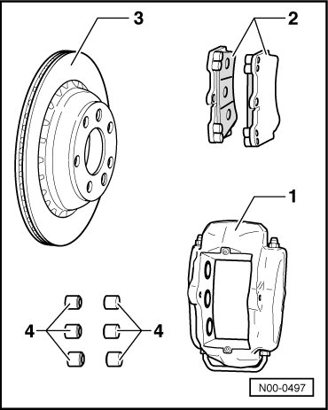
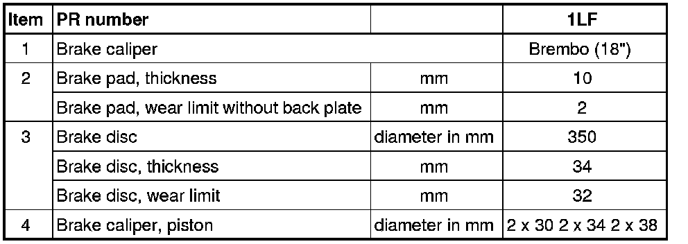

LEMON Manuals
: Even more car manuals for everyone: 1960-2025
Home
>>
Volkswagen
>>
2004
>>
Touareg (7LA) V6-3.2L (BAA)
>>
Repair and Diagnosis
>>
Specifications
>>
Mechanical Specifications
>>
Brakes and Traction Control
>>
Brake Caliper
>>
18 Inch Caliper
18 Inch Caliper
18 Inch Caliper
PR Number: 1LF

